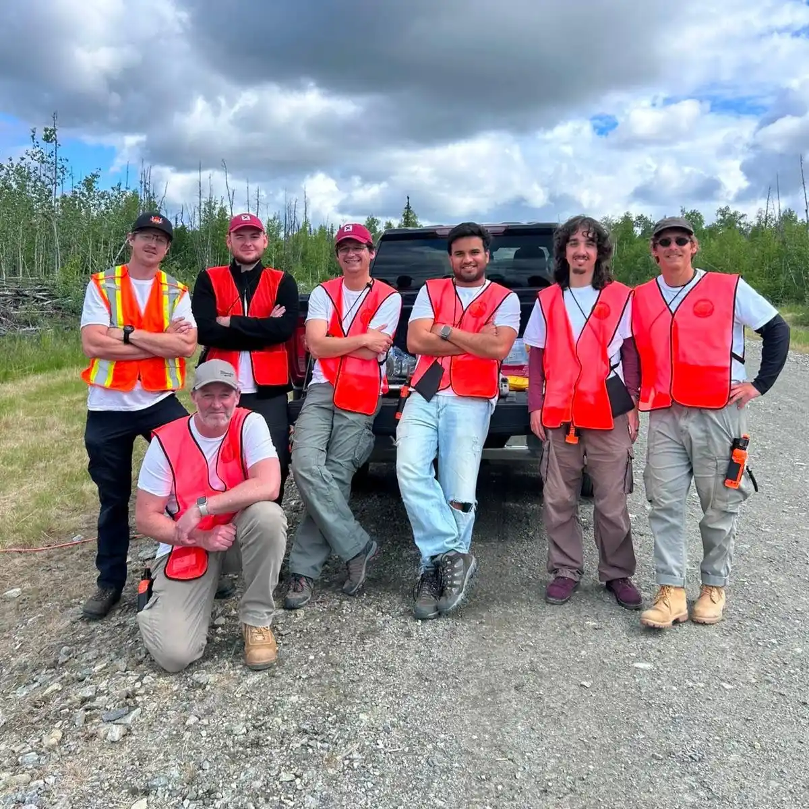

Aerospace & UAV Systems
James Bray
R&D Contractor
I design, prototype, and deploy end-to-end systems — from firmware to flight.


01 — About
About Me
See more of my background on my CV page
01
Background
I am an Aerospace MEng graduate specialising in UAV system software. I have a range of past projects and upcoming contracts, giving me a wide field of applicable knowledge, making me highly adaptable to new challenges. I drop into cross-disciplinary teams, move fast between system design and hands-on build, and ship working results.
02
What I Do
I design, prototype, and deploy end-to-end engineering systems. Operating across the full workflow, I integrate complex firmware with physical hardware, build real-time embedded controls, and optimise system architectures. By leveraging simulation tools and AI automation, I eliminate technical bottlenecks and ship high-performance, intelligent products.
03
What's Next?
I'm taking on short-term, high-impact R&D contracts to build a wide skill set and network across the industry before I advance into long term goals.
Eventually, when the time is right, I'd like my own company focused on future-facing, meaningful projects. Until then, I am helping engineering teams solve their hardest problems, one system at a time.
02 — Featured
Highlighted Projects
See more of my projects on my project page

Autonomous UAV Swarm for Wildfire Response
Sep 2025 – May 2026
- Wrote my Masters Dissertation on novel approaches to wildfire searching with swarms
- Deployed in Alaska to implement and test my code on a fleet of autonomous UAVs
- Engineered a novel thermal detection refinement method to localise fires with 1m accuracy
- Profiled system architecture to identify critical network bottlenecks and mitigate them
- Conducted rapid hardware-in-the-loop testing cycles in a 38h non-stop development sprint
- Contributed to an academic paper on sensor methodology and optimisation techniques

VTOL Quadplane Design Build and Test
Sep 2024 – May 2025
- Led the design and integration of the full avionics system for a modular VTOL UAV platform
- Designed open-plan, modular electronics layout with accessible connections for maintainability
- Implemented ironbird avionics testbed to verify systems before final integration
- Supported system-level integration ensuring plug-and-play compatibility across subsystems
- Optimised cooling layout by externally mounting ESCs and positioning components for airflow
- Collaborated cross-functionally with flight dynamics, structures, and integration teams

Quadcopter Design Build and Test
Sep 2023 – May 2024
- Won the contract for the lightest flying drone out of a cohort of 31 teams
- Led control team, optimising flight behaviour through PID controller BetaFlight
- Used Google Sheets to analyse and predict motor performance with different components
- Modelled a digital twin in Fusion 360 to ensure consistency during manufacture
- Used topology optimisation to optimise the strength-to-weight ratio of the frame
- Manufactured drone using laser cut or 3D printed parts, and soldered electronics

UKSEDS Student Rocketry Competition
Sep 2022 – May 2023
- Designed and 3D printed a whistling rocket nosecone using Fusion 360 and Prusa
- Developed an avionics bay using Teensy 4.1, GPS, IMU, and environmental sensors
- Managed a £300 budget across design, avionics, and recovery systems
- Produced a full technical report and performance evaluation for the UKSEDS competition
- Simulated flight dynamics using OpenRocket to ensure maximum apogee
- Handled subteam conflicts regarding rocket dimensions and features